Shimanto Town, Kochi: things to do, food and stays
Shimanto Town · Kochi
Shimanto Town
Highlighted on the Kochi map.
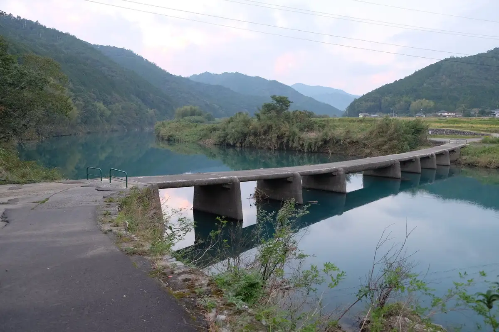
Stay
ファミリーロッジ旅籠屋・四万十店
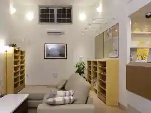
Famiri Lodge Hatago Ya Shimanto
Mountain lodge in Todainaro, Shimanto Town with breakfast available and family-friendly stays.
集落活動センターけやき
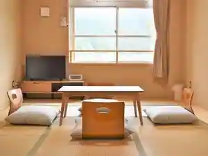
Shuraku Katsudo Center Keyaki
ホテル松葉川温泉
Hotel Matsuba Kawa Onsen
Hotel at Hotelmatsubakawa Onsen in Hinochi, Shimanto Town with open-air baths.
Dining
満洲軒
Manshu Ken
四万十郷 水車亭
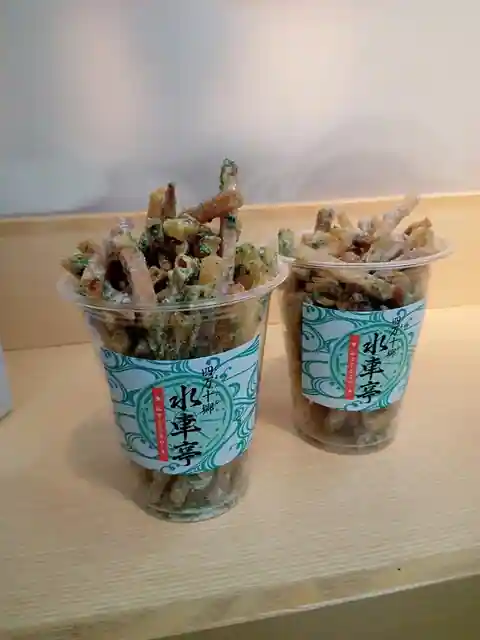
Shimanto Sato Suisha Tei
うなきち
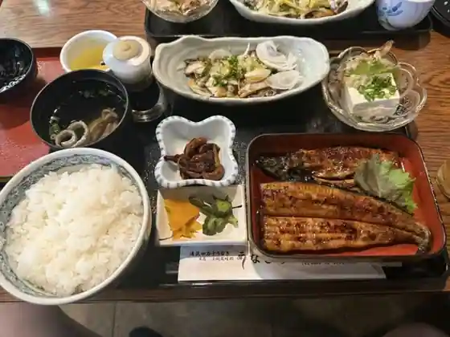
Unakichi
シマント おちゃくり カフェ
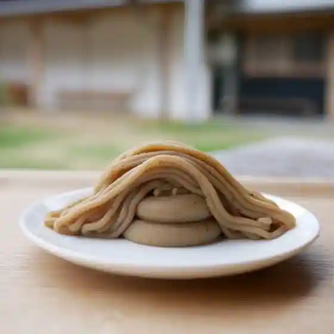
Shimanto Ochakuri Cafe
とおわ食堂
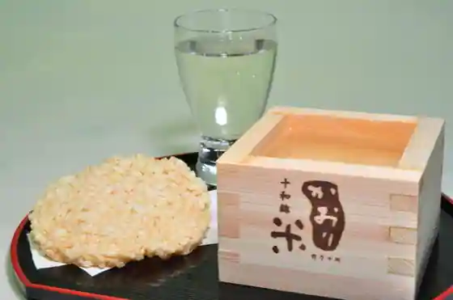
Towa Shokudo
道の駅 あぐり窪川
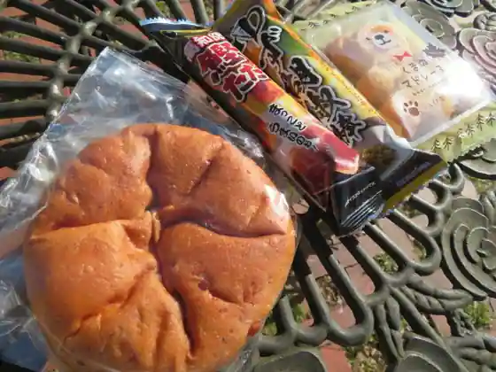
Michi No Eki Aguri Kubokawa
みるく工房
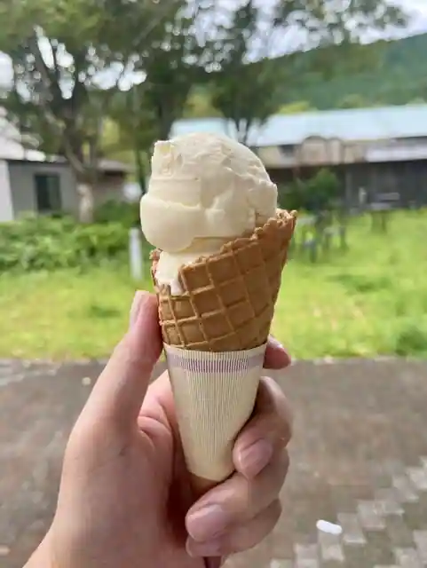
Miruku Kobo
ケルン
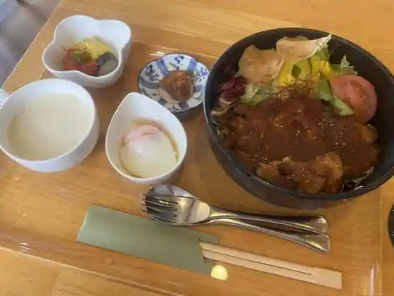
Kerun
古民家カフェ 半平
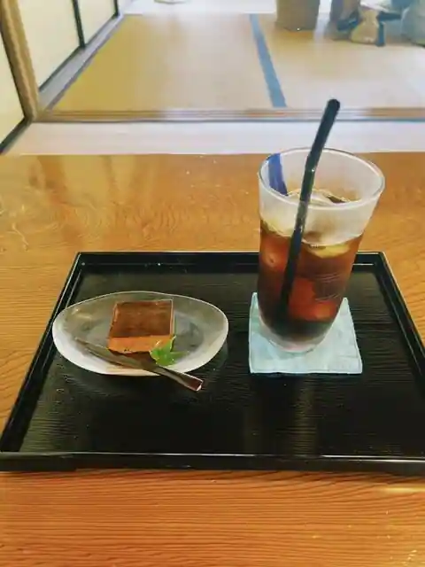
Ko Minka Cafe Handaira
ゆういんぐ四万十
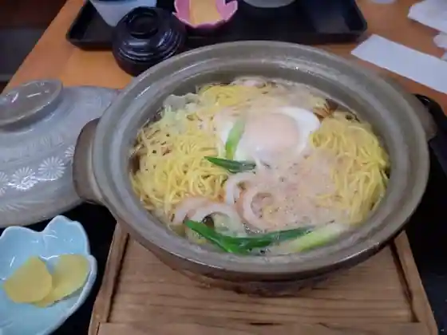
Yuingu Shimanto
淳
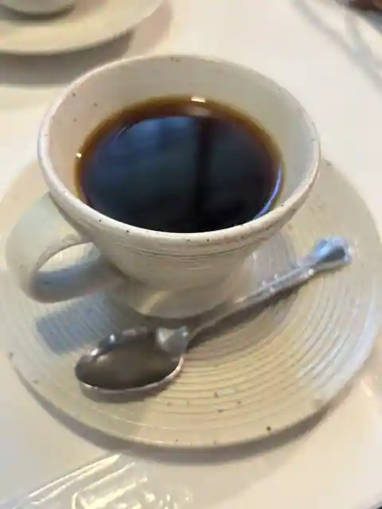
Atsushi
しまんとえきめし FORM
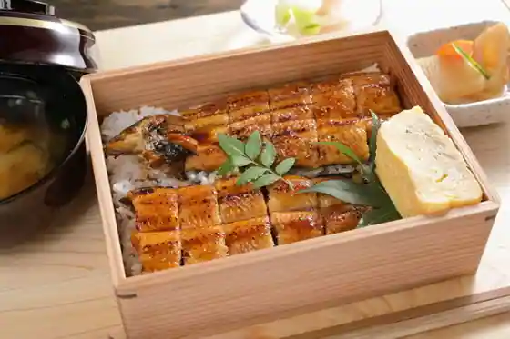
Shimantoekimeshi FORM
こっこらんど 本店
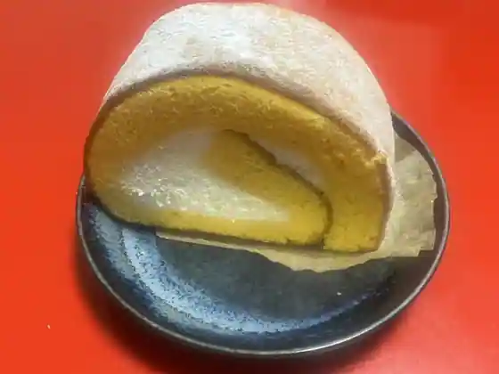
Kokkorando Hon
松鶴堂
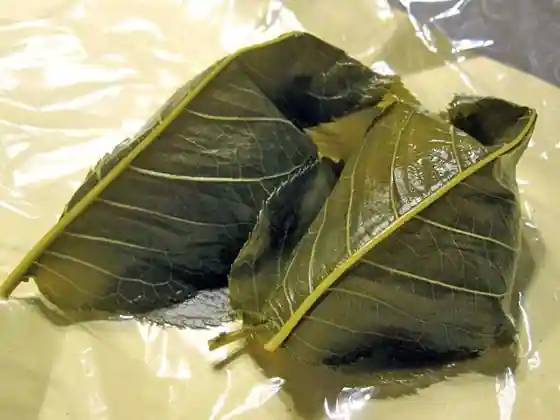
Shokaku Do
レストラン風人
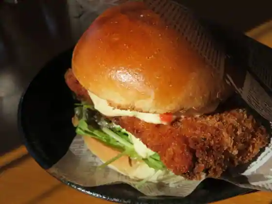
Restaurant Fujin
味覚
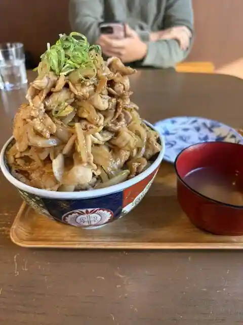
Mikaku
まるい
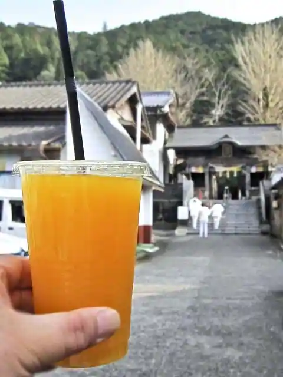
Marui
コバコ
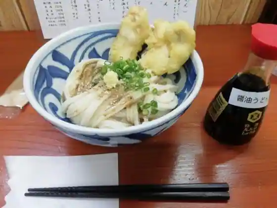
Kobako
道の駅四万十大正 食堂であいの里
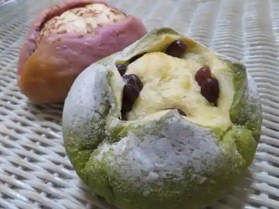
Michi No Eki Shimanto Taisho Shokudo Deaino Sato
駒鳥
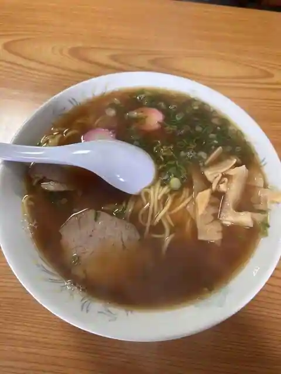
Komadori
食堂ヒラグシ
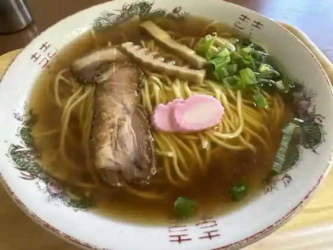
Shokudo Hiragushi
ロガー
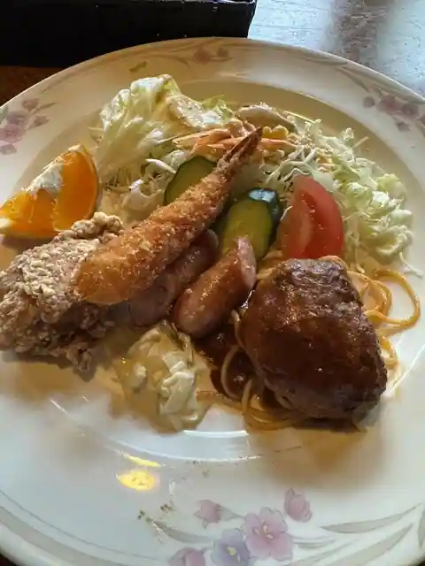
Roga
美馬旅館
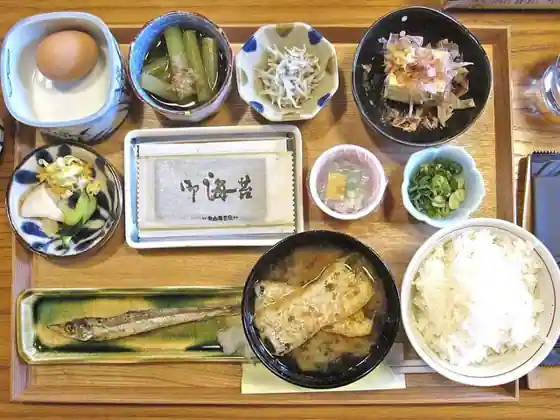
Mima Ryokan
Sights
Itto Tawara Chinkakyo
Iwamoto Tera
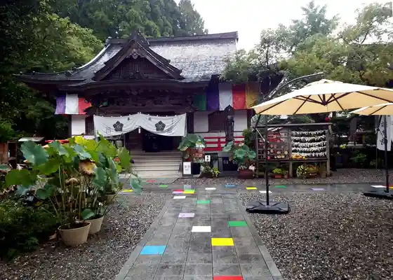
Kaiyo Do Hobii Kan Shimanto Town
Kubokawa Eki
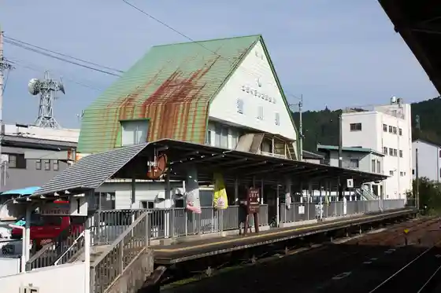
Roadside Station Shimanto Town Taisho
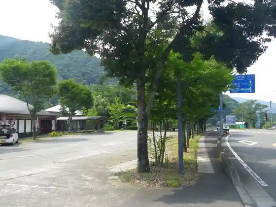
Roadside Station Aguri Kubokawa